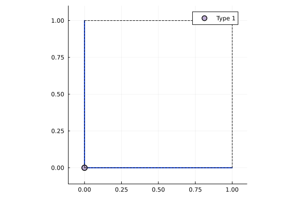
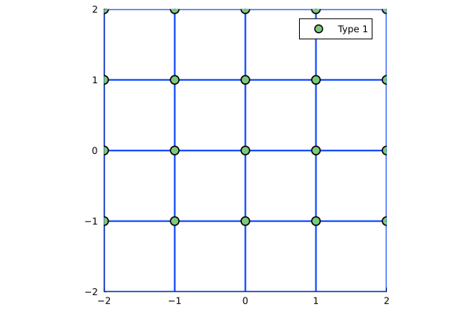
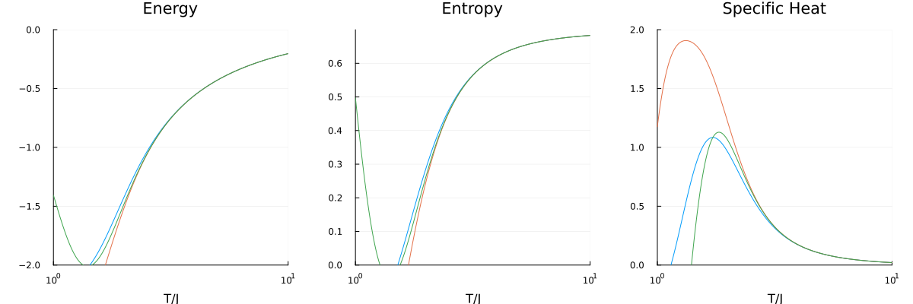

Square Lattice Site Expansion
This example computes the linked cluster expansion on a square lattice up to order 3.
Setup
Define the one-site square unit cell:
using Lincege
square_basis = [[0.0, 0.0]]
square_pvecs = [[1.0, 0.0], [0.0, 1.0]]
square_bonds = [Bond(1, 1, [1, 0], 1), Bond(1, 1, [0, 1], 1)]
square_uc = UnitCell(square_basis, square_pvecs, square_bonds, [1])UnitCell([0.0; 0.0;;], [1.0 0.0; 0.0 1.0], [1], Bond[Bond(1, 1, [1, 0], 1), Bond(1, 1, [0, 1], 1)])One site and two orthogonal primitive vectors generate the square lattice. The offsets [1, 0] and [0, 1] are horizontal and vertical bonds. Equal site colors and bond types treat these sites and interactions as equivalent.
Imaging the unit cell and lattice
Load Plots and ColorSchemes to activate Lincege's plotting capabilities.
using Plots, ColorSchemes
image_unit_cell(square_uc)
image_lattice(square_uc)
Building the lattice and clusters
The following code generates clusters up to order 3, starting with translational clusters and reducing to isomorphic clusters.
m_order = 3
lattice = SiteExpansionLattice(m_order, square_uc)
trans_clusters = TranslationClusterSet(lattice)
clusters_from_lattice!(trans_clusters, lattice)
iso_clusters = IsomorphicClusterSet(lattice)
reduce_clusters!(iso_clusters, trans_clusters)ClusterSet{IsomorphicHasher} with 3 clustersComputing the expansion
The final NLCE expansion weights are computed recursively.
expansion = Expansion(iso_clusters, lattice)
summation!(expansion, m_order)Expansion(Dict{UInt64, Lincege.ExpansionCluster}(0xea8447a37b9b22d0 => Lincege.ExpansionCluster(Vertices: [18, 25], 2.0, UInt64[0x0ef7ab2229d359da, 0x0ef7ab2229d359da], Dict{UInt64, Float64}(0xea8447a37b9b22d0 => 1.0, 0x0ef7ab2229d359da => -2.0)), 0x0ef7ab2229d359da => Lincege.ExpansionCluster(Vertices: [25], 1.0, UInt64[], Dict{UInt64, Float64}(0x0ef7ab2229d359da => 1.0)), 0xa363884a2e20cf53 => Lincege.ExpansionCluster(Vertices: [17, 18, 25], 6.0, UInt64[0xea8447a37b9b22d0, 0x0ef7ab2229d359da, 0x0ef7ab2229d359da, 0xea8447a37b9b22d0, 0x0ef7ab2229d359da], Dict{UInt64, Float64}(0xea8447a37b9b22d0 => -2.0, 0x0ef7ab2229d359da => 1.0, 0xa363884a2e20cf53 => 1.0))), Vector{UInt64}[[0x0ef7ab2229d359da], [0xea8447a37b9b22d0], [0xa363884a2e20cf53]], 0)Writing to JSON
Write the results to a JSON file for the Ising calculation below.
json_path = joinpath(mktempdir(), "square_lattice.json")
write_to_json(expansion, lattice, json_path)For a colon-separated text file containing the same cluster data, use write_to_txt_file:
txt_path = joinpath(dirname(json_path), "square_lattice.txt")
write_to_txt_file(expansion, lattice, txt_path)Each row contains n_sites : cluster_hash : bonds : coordinates : site_colors : weights : order. Bonds are space-separated triples, coordinates use (x,y) tuples, and empty fields represent empty vectors. The header names the fields. The Ising example below continues to read the JSON file.
Ising Model Simulation
Load the exported clusters and create an Ising solver for each one. Compute the NLCE observables over a temperature range, then apply Euler and Wynn resummations. The final expression compares the bare and resummed specific heat near T/J = 2.
temperatures = collect(range(0.5, 5.0, length=200))
clusters = import_from_json(json_path)
solvers = [IsingSolver(c) for c in clusters]
nlce_result = perform_nlce(solvers, temperatures)
resummed = apply_resummations(nlce_result, [(:Euler, 2), (:Wynn, 1)])
T_idx = argmax(temperatures .>= 2.0)
(temperature = temperatures[T_idx],
bare = nlce_result.specific_heat[end][T_idx],
resummed = resummed.specific_heat[end][T_idx])(temperature = 2.0150753768844223, bare = 0.0, resummed = 0.0)Plotting Results
Sum the contributions through each order to plot the energy, entropy, and specific heat as functions of temperature.
using Plots
T = nlce_result.temperatures
n_orders = length(nlce_result.energy)
energy_cumsum = hcat([sum(nlce_result.energy[1:n]) for n in 1:n_orders]...)
entropy_cumsum = hcat([sum(nlce_result.entropy[1:n]) for n in 1:n_orders]...)
cv_cumsum = hcat([sum(nlce_result.specific_heat[1:n]) for n in 1:n_orders]...)
plot_range = max(1, n_orders - 2):n_orders
labels = reshape(["Order $n" for n in plot_range], 1, :)
p1 = plot(T, energy_cumsum[:, plot_range]; label=false, xlabel="T/J", title="Energy")
p2 = plot(T, entropy_cumsum[:, plot_range]; label=labels, xlabel="T/J", title="Entropy", legend=:top)
p3 = plot(T, cv_cumsum[:, plot_range]; label=false, xlabel="T/J", title="Specific Heat")
plot(p1, p2, p3; layout=(1, 3), size=(900, 300))The following cached plot shows convergence through order 10 for the square lattice Ising model. It comes from a separate calculation, the code above runs only through order 3.
